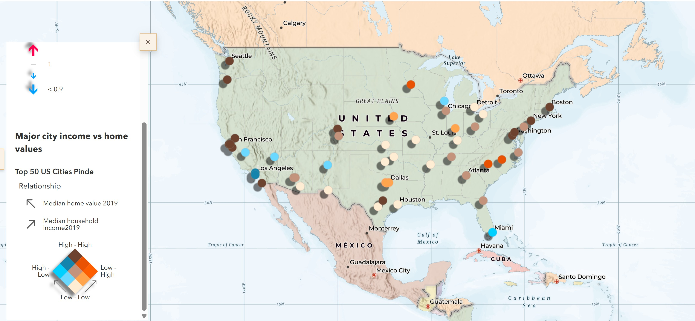
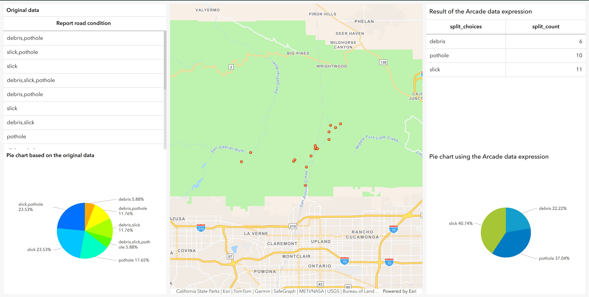

Featured Applications
Story of U.S. Population Change

ArcGIS StoryMap examining population trends and demographic change through interactive maps, narrative content, and visual storytelling.
Open StoryMapWest Monroe & Monroe Downtown Restaurants

ArcGIS Instant App configured to display Restaurant Locations, associated images, and supporting information.
Open Instant App3D Web Scene

Interactive 3D scene displaying geospatial information in a three-dimensional environment using ArcGIS Scene Viewer.
Open Web SceneEmergency Dashboard

Dashboard application developed to communicate spatial information, emergency response, and support data-driven decision making.
Open DashboardInteractive Dashboard

ArcGIS Dashboard designed to visualize spatial information through charts, maps, indicators, and interactive filters.
Open DashboardClimate Resilience and Vulnerability Assessment

ArcGIS StoryMap exploring climate resilience, environmental vulnerability, and geospatial analysis techniques through interactive maps, visualizations, and narrative storytelling.
Open StoryMapStoryMap to Compare Vector and Raster Tile Layers

Additional ArcGIS StoryMap project showcasing the swipe function to visulize geospatial storytelling and interactive communication techniques vs a side by side tile.
Open StoryMap